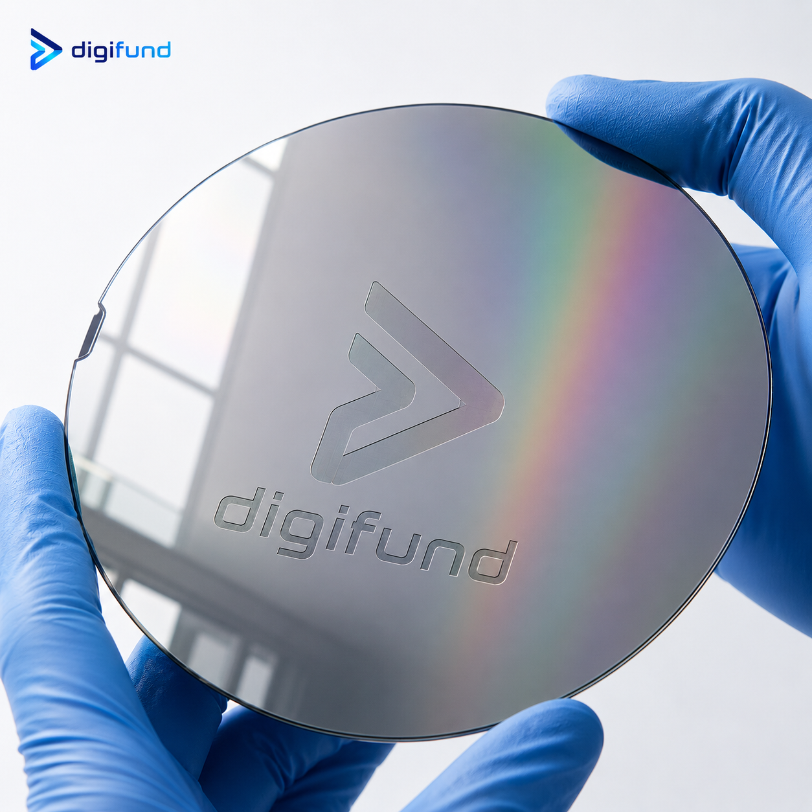

Nội dung chính
Contents
1. Silicon wafer là gì?
1. What is a silicon wafer?
Silicon wafer (còn gọi là tấm wafer silic hay đế silic) là một lát mỏng hình tròn được cắt ra từ thỏi silic (silicon) đơn tinh thể có độ tinh khiết cực cao — thường trên 99,9999999% (mức "9N"). Đây chính là vật liệu nền (substrate) mà trên đó người ta chế tạo hàng triệu, thậm chí hàng tỷ transistor để tạo thành vi mạch tích hợp (IC) và chip bán dẫn.
A silicon wafer (also called a silicon slice or silicon substrate) is a thin, round slice cut from a single-crystal silicon ingot of extremely high purity — typically above 99.9999999% ("9N"). It is the base material (substrate) on which millions, even billions, of transistors are built to form integrated circuits (ICs) and semiconductor chips.
Nói một cách đơn giản, nếu con chip là "bộ não" của mọi thiết bị điện tử — từ điện thoại, máy tính, ô tô đến vệ tinh — thì silicon wafer chính là nền móng vật lý để xây dựng bộ não đó. Không có wafer silic chất lượng cao, ngành sản xuất chip bán dẫn không thể tồn tại.
Simply put, if the chip is the "brain" of every electronic device — from phones, computers and cars to satellites — then the silicon wafer is the physical foundation on which that brain is built. Without high-quality silicon wafers, the chip industry could not exist.

2. Cấu tạo và đặc điểm của tấm silicon wafer
2. Structure and characteristics of a silicon wafer
Silicon wafer được sản xuất từ silic — nguyên tố phổ biến thứ hai trong vỏ Trái Đất, có nhiều trong cát thạch anh (SiO₂). Tuy nhiên, wafer bán dẫn đòi hỏi silic ở dạng tinh khiết và có cấu trúc tinh thể hoàn hảo. Một tấm silicon wafer chất lượng cao có các đặc điểm:
Silicon wafers are made from silicon — the second most abundant element in the Earth's crust, found in quartz sand (SiO₂). However, semiconductor wafers require silicon that is highly pure with a perfect crystal structure. A high-quality silicon wafer has these characteristics:
- Độ tinh khiết cực cao: tạp chất được kiểm soát ở mức phần tỷ (ppb) để không ảnh hưởng đến tính chất điện của chip.
- Cấu trúc đơn tinh thể: toàn bộ tấm là một khối tinh thể liên tục, định hướng theo mặt tinh thể xác định (ví dụ <100> hoặc <111>).
- Bề mặt siêu phẳng, bóng gương: được đánh bóng cơ – hoá (CMP) để đạt độ phẳng nanomet, không trầy xước.
- Độ dày đồng đều: thường từ 275µm đến 925µm tùy đường kính wafer.
- Extremely high purity: impurities are controlled to parts-per-billion (ppb) so they don't affect the chip's electrical properties.
- Single-crystal structure: the whole slice is one continuous crystal, oriented along a defined crystal plane (e.g. <100> or <111>).
- Ultra-flat, mirror surface: polished by chemical-mechanical planarization (CMP) to nanometer flatness, scratch-free.
- Uniform thickness: typically 275µm to 925µm depending on wafer diameter.
3. Quy trình sản xuất silicon wafer: từ cát đến wafer
3. Manufacturing a silicon wafer: from sand to wafer
Hành trình biến những hạt cát trở thành một tấm silicon wafer bóng loáng trải qua nhiều công đoạn phức tạp:
The journey turning grains of sand into a gleaming silicon wafer goes through several complex steps:
- Tinh luyện silic: cát thạch anh (SiO₂) được khử thành silic luyện kim, sau đó tinh chế thành silic đa tinh thể siêu sạch (polysilicon).
- Nuôi thỏi đơn tinh thể (ingot): polysilicon được nấu chảy và kéo thành thỏi đơn tinh thể lớn bằng phương pháp Czochralski (CZ) hoặc Float Zone (FZ).
- Cắt lát (slicing): thỏi silic được cắt thành các lát mỏng bằng dây cắt kim cương.
- Mài và đánh bóng (lapping & polishing): mỗi lát được mài phẳng rồi đánh bóng cơ – hoá (CMP) để đạt bề mặt gương.
- Làm sạch và kiểm tra: wafer được làm sạch trong phòng sạch và kiểm tra khuyết tật trước khi đóng gói.
- Silicon refining: quartz sand (SiO₂) is reduced to metallurgical silicon, then purified into ultra-pure polysilicon.
- Growing the single-crystal ingot: polysilicon is melted and pulled into a large single-crystal ingot using the Czochralski (CZ) or Float Zone (FZ) method.
- Slicing: the ingot is cut into thin slices with a diamond wire saw.
- Lapping & polishing: each slice is lapped flat then chemical-mechanically polished (CMP) to a mirror finish.
- Cleaning & inspection: wafers are cleaned in a cleanroom and inspected for defects before packaging.
4. Kích thước và phân loại silicon wafer
4. Sizes and types of silicon wafer
Silicon wafer được sản xuất ở nhiều đường kính khác nhau. Kích thước càng lớn thì số lượng chip cắt được trên mỗi tấm càng nhiều, giúp giảm chi phí sản xuất.
Silicon wafers are produced in various diameters. The larger the size, the more chips can be cut from each wafer, lowering production cost.
| Đường kínhDiameter | Quy đổiMetric | Ứng dụng phổ biếnCommon uses |
|---|---|---|
| 2 inch | 50,8 mm | Nghiên cứu, R&D, LED, vật liệu mớiResearch, R&D, LED, new materials |
| 4 inch | 100 mm | Cảm biến, MEMS, điện tử công suấtSensors, MEMS, power electronics |
| 6 inch | 150 mm | Điện tử công suất, SiC, LEDPower electronics, SiC, LED |
| 8 inch | 200 mm | Vi mạch analog, cảm biến, MEMSAnalog ICs, sensors, MEMS |
| 12 inch | 300 mm | CPU, GPU, bộ nhớ DRAM/Flash cao cấpCPUs, GPUs, high-end DRAM/Flash memory |
Ngoài silic (Si), thị trường còn có các loại wafer bán dẫn hợp chất và vật liệu nền khác như SiC, GaAs, Sapphire, InP và SOI. Xem chi tiết tại bài Phân loại Silicon Wafer.
Besides silicon (Si), the market also offers compound semiconductor wafers and other substrates such as SiC, GaAs, Sapphire, InP and SOI. See details in Types of Silicon Wafer.
5. Ứng dụng của silicon wafer
5. Applications of silicon wafer
Silicon wafer là vật liệu nền cho hầu hết các thiết bị điện tử hiện đại:
Silicon wafers are the base material for most modern electronic devices:
- Chip xử lý & bộ nhớ: CPU, GPU, RAM, chip AI trong máy tính và điện thoại.
- Cảm biến & MEMS: cảm biến hình ảnh, gia tốc, áp suất, vi cơ điện tử.
- Điện tử công suất: module điều khiển ô tô điện, năng lượng tái tạo (đặc biệt là wafer SiC).
- Pin mặt trời: tấm silic đa/đơn tinh thể là lõi của pin quang điện.
- Quang tử & LED: đế cho diode phát quang, laser bán dẫn.
- Processors & memory: CPUs, GPUs, RAM, AI chips in computers and phones.
- Sensors & MEMS: image, acceleration and pressure sensors, microelectromechanical systems.
- Power electronics: EV control modules, renewable energy (especially SiC wafers).
- Solar cells: mono/poly crystalline silicon slices are the core of photovoltaic cells.
- Photonics & LED: substrates for light-emitting diodes and semiconductor lasers.
Chi tiết hơn tại bài Ứng dụng của Silicon Wafer trong bán dẫn, năng lượng và cảm biến.
More detail in Applications of Silicon Wafer in semiconductors, energy and sensors.
6. Mua silicon wafer ở đâu tại Việt Nam?
6. Where to buy silicon wafers in Vietnam?
Digifund là nhà cung cấp silicon wafer, substrate và vật liệu bán dẫn độ tinh khiết cao tại Việt Nam. Chúng tôi cung cấp đa dạng wafer Si, SiC, GaAs, Sapphire, InP, SOI với nhiều kích thước và thông số kỹ thuật, phục vụ các viện nghiên cứu, trường đại học và doanh nghiệp sản xuất trong nước.
Digifund is a supplier of high-purity silicon wafers, substrates and semiconductor materials in Vietnam. We offer a wide range of Si, SiC, GaAs, Sapphire, InP and SOI wafers in various sizes and specifications, serving research institutes, universities and domestic manufacturers.
Cần tư vấn chọn silicon wafer phù hợp?
Need help choosing the right silicon wafer?
Đội ngũ kỹ sư Digifund hỗ trợ bạn chọn đúng loại wafer, kích thước và thông số cho dự án bán dẫn của mình.
Digifund's engineers help you pick the right wafer type, size and specifications for your semiconductor project.
Xem catalog Silicon WaferView Silicon Wafer catalog Liên hệ báo giáRequest a quote